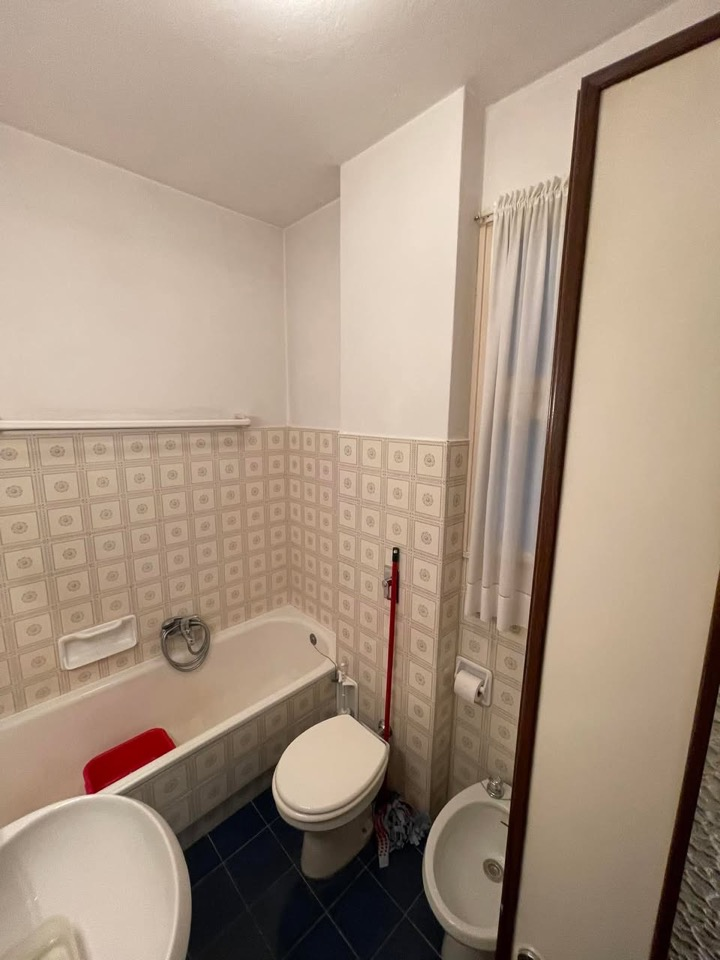
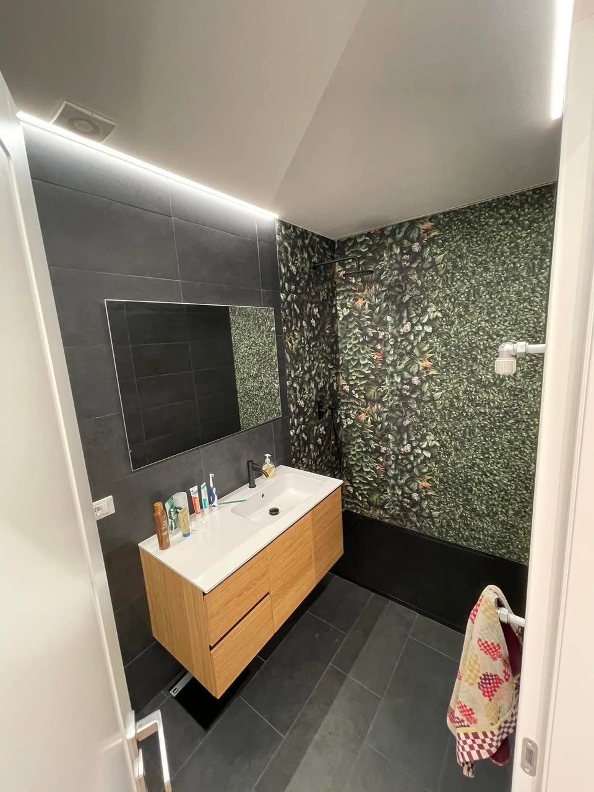
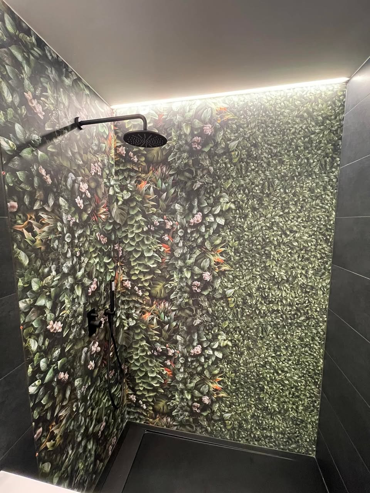
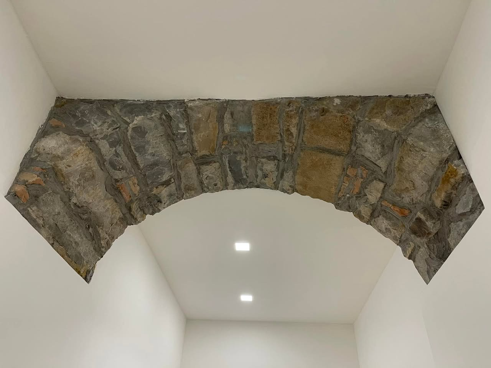
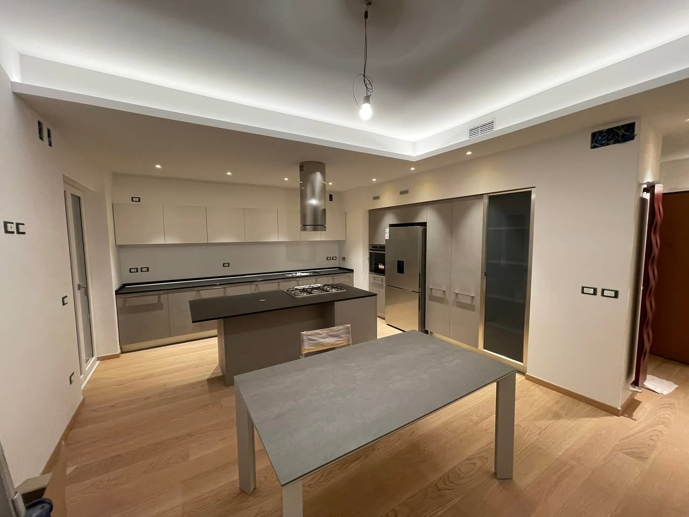
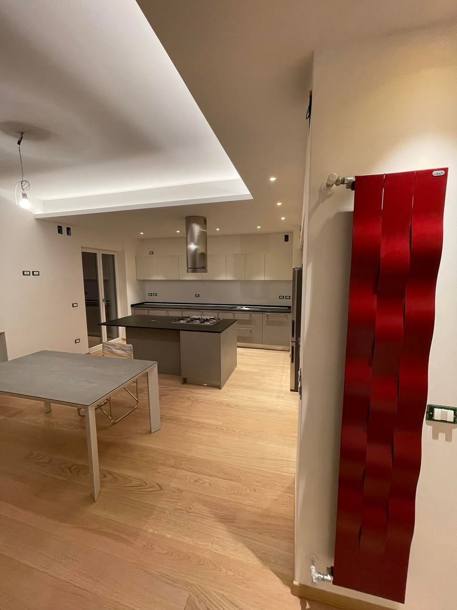
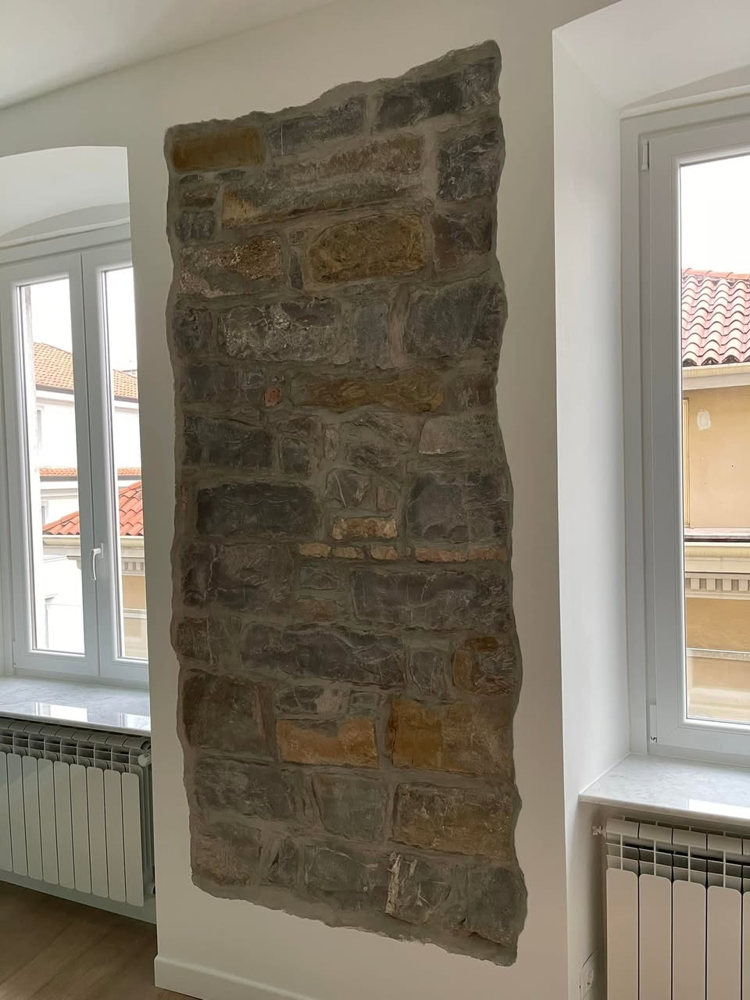
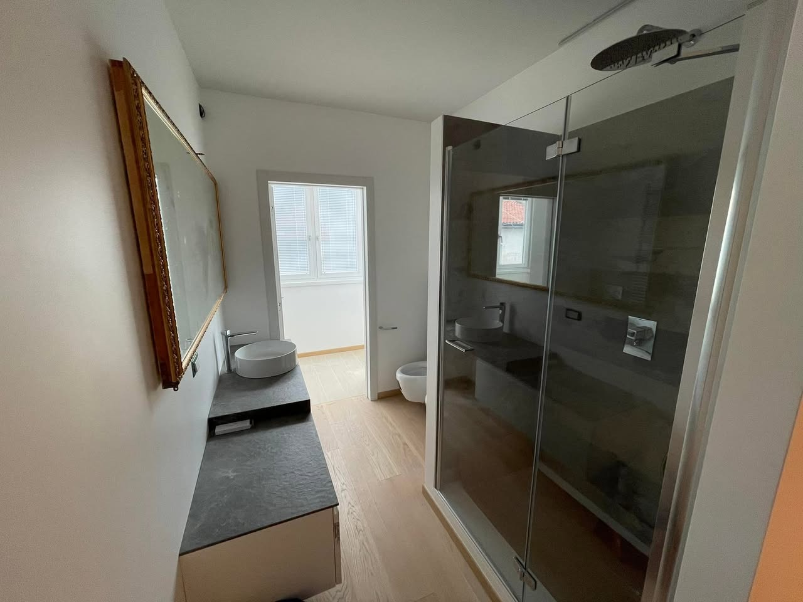
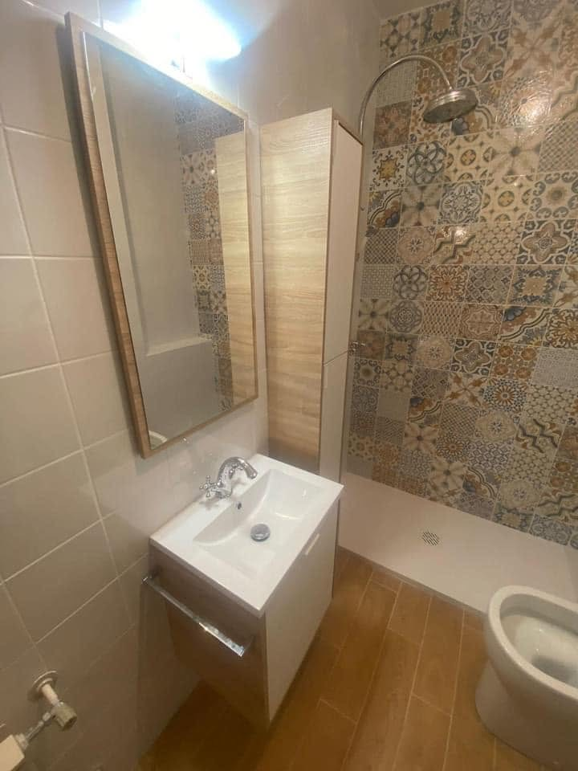
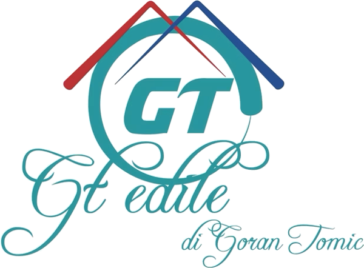

15+anni di ristrutturazioni, come scrivono sulla loro pagina
Chiavi in manouna sola impresa per tutto il lavoro
Finituree design degli interni come punto di forza
Via Toti 2/ATrieste, zona Ospedale Maggiore
Prima e dopo · un cantiere vero
Lo stesso bagno, rifatto da capo.
Prima. Vasca, piastrelle d'epoca e pavimento blu.
Il cantiere. Rivestimenti, pavimento e sanitari: si rifà tutto.
Dopo. Doccia al posto della vasca, cementine decorate e gres effetto legno.

PrimaDopo
Foto dalla pagina Facebook di GT Edile.
Cosa facciamo
Dal bagno alla casa intera, con una sola squadra.

01
Ristrutturazione bagni
Si toglie il vecchio e si rifà tutto: rivestimenti, pavimento, sanitari, doccia al posto della vasca, mobili e luci.

02
Rivestimenti e pavimenti
Posa di piastrelle, cementine, gres effetto legno e grandi formati, a pavimento e a parete.

03
Pietra a vista
Archi e muri in pietra delle vecchie case triestine, liberati dall'intonaco e lasciati a vista.

04
Intonaci, cartongesso e tinteggiature
Pareti, controsoffitti con luce indiretta, stuccature e imbiancatura di stanze e appartamenti.

05
Appartamenti chiavi in mano
Una ristrutturazione completa seguita da una sola impresa, con un solo referente dall'inizio alla fine.

Lavori
Case di Trieste, finite.
Foto dei loro cantieri, dalla pagina Facebook di GT Edile. Trascinate per vederle tutte.

01Bagno con box doccia e pavimento in legno02Pietra a vista tra le finestre03L'arco in pietra, ripulito

04Cementine e legno chiaro05Gres scuro e luce a soffitto

Chi siamo
Un'impresa di Trieste, con il nome di chi la guida.
GT Edile è l'impresa di Goran Tomic. Si occupa di ristrutturazioni chiavi in mano da oltre 15 anni, con particolare attenzione alle finiture interne e al design. La sede è in Via Enrico Toti, a due passi dall'Ospedale Maggiore.
Con me sono stati puntuali, di parola e collaborativi, oltre che cortesi e professionali.
Claudio P., recensione Google
Come si lavora
Quattro passaggi, un solo referente.
01
Sopralluogo
Veniamo a vedere la casa e ascoltiamo cosa volete cambiare.
02
Preventivo
Un preventivo scritto, voce per voce, con materiali e tempi.
03
Cantiere
Una sola impresa per demolizioni, muri, rivestimenti e finiture.
04
Consegna
Controlliamo insieme ogni dettaglio prima di consegnarvi le chiavi.